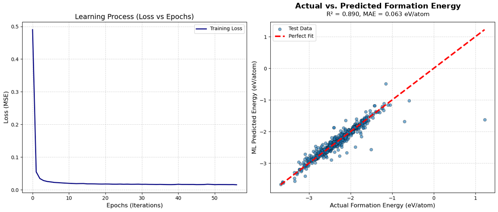

AI TESTING · MODEL EVALUATION · PRODUCT EXPERIENCE
陈幸雯｜AI 测试与模型评估作品集
这个作品集展示我如何把开放问题转化为可验证流程：定义标准、建立筛选或评估方法、检查可靠性，并明确 AI 或模型结果的使用边界。
问题定义评价标准构建可靠性验证风险与边界判断
PROJECTS
项目案例
每个项目都保留真实任务逻辑和已确认数据，不用未经确认的推测包装结果。

PROJECT 01
三维吸附构型筛选
从 2948 个候选构型中建立分层筛选流程，结合能量、Li–Cu 距离、锚点与取向分析保留代表构型。

PROJECT 02
形成能预测与可靠性验证
将材料筛选需求转化为回归建模任务，并通过独立测试、训练测试对比与五折交叉验证判断模型边界。

PROJECT 03
待补充项目
第三个项目内容整理后接入，后续会保持同样的结构：任务、方法、证据、边界和个人贡献。
POSITIONING
能力定位
这个网站不是代码堆叠，而是展示我如何做判断、验证结果，并把复杂过程表达成可复核的工作流。
适配方向
AI 测试、大模型评测、AI Native 产品体验、AI 应用与 Agent 相关实习岗位。
核心能力
把开放任务拆成可执行、可验证的评价流程。
用数据和图表说明判断依据，而不是只给结论。
识别模型或 AI 工具的适用范围、异常信号和风险边界。